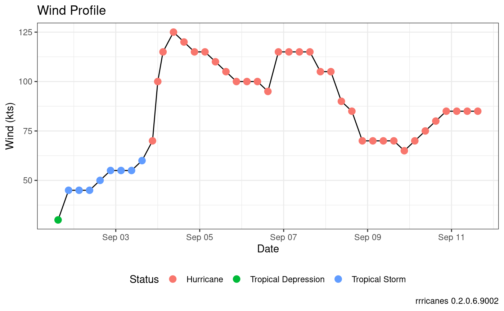
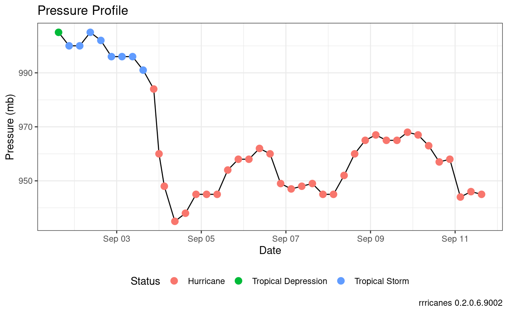
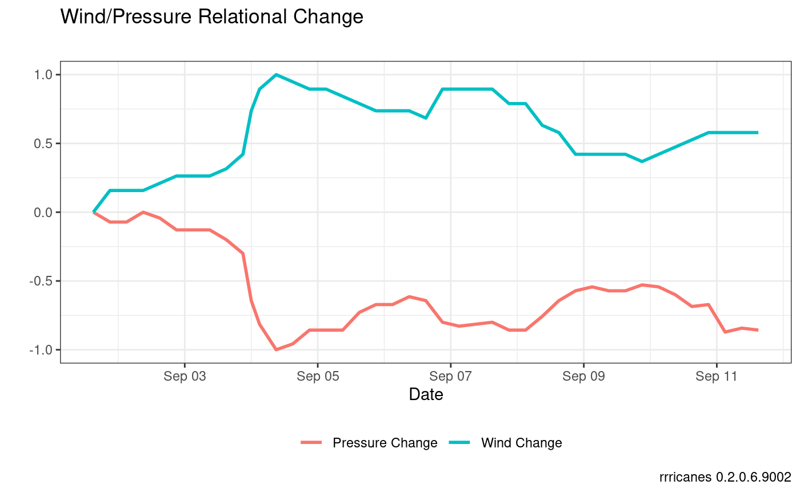
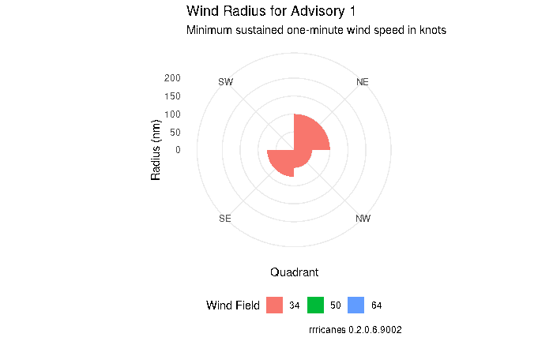

library(dplyr)
library(gganimate)
library(ggplot2)
library(rrricanes)
library(rrricanesdata)
library(tidyr)
key <- "AL092008"
adv <- 42Forecast/Advisory Data for Hurricane Ike Adv #42
fstadv <- fstadv %>% filter(Key == key, Adv <= adv)Wind Profile
# Plot wind values
fstadv %>% ggplot(aes(x = Date, y = Wind)) +
geom_line() +
geom_point(aes(color = Status), size = 3) +
scale_y_continuous(name = "Wind (kts)") +
theme_bw() +
theme(legend.position = "bottom",
legend.box = "vertical") +
labs(title = "Wind Profile",
caption = sprintf("rrricanes %s", packageVersion("rrricanes")))
Pressure Profile
# Plot pressure values
fstadv %>% ggplot(aes(x = Date, y = Pressure)) +
geom_line() +
geom_point(aes(color = Status), size = 3) +
scale_y_continuous(name = "Pressure (mb)") +
theme_bw() +
theme(legend.position = "bottom",
legend.box = "vertical") +
labs(title = "Pressure Profile",
caption = sprintf("rrricanes %s", packageVersion("rrricanes")))
Wind/Pressure Relational Change
fstadv %>%
mutate(WindDist = (Wind - min(Wind))/(max(Wind) - min(Wind)),
PressDist = (Pressure - max(Pressure))/(max(Pressure) - min(Pressure))) %>%
gather(Var, Val, WindDist, PressDist) %>%
ggplot(aes(x = Date, y = Val, group = Var, color = Var)) +
geom_line(size = 1) +
scale_color_discrete(labels = c("Pressure Change", "Wind Change")) +
theme_bw() +
theme(legend.position = "bottom",
legend.title = element_blank()) +
labs(title = "Wind/Pressure Relational Change",
subtitle = "",
caption = sprintf("rrricanes %s", packageVersion("rrricanes")),
y = "")
Wind Radius
wr_animate <-
fstadv %>%
tidy_wr() %>%
gather(Quadrant, Radius, NE:NW) %>%
ggplot(
aes(
x = Quadrant,
y = Radius,
fill = factor(WindField),
frame = Adv
)
) +
geom_bar(stat = "identity", position = "identity", width = 1) +
guides(fill = guide_legend(title = "Wind Field")) +
coord_polar() +
theme_minimal() +
theme(legend.position = "bottom") +
labs(
title = "Wind Radius for Advisory {frame}",
subtitle = "Minimum sustained one-minute wind speed in knots",
caption = sprintf("rrricanes %s", packageVersion("rrricanes")),
y = "Radius (nm)"
) +
transition_time(Date) +
ease_aes('linear')
animate(wr_animate, renderer = magick_renderer())
One of the interesting things to note about the image above; Hurricane Ike was known for it’s very large wind field (relatively speaking) which generated a larger and wider storm surge than normal for it’s classification. You can see this very well defined structure expansion between advisories 38 and 42.
This, in part, led to the modification of the Saffir Simpson Hurricane Scale.
the very large Hurricane Ike (with hurricane force winds extending as much as 125 mi from the center) in 2008 made landfall in Texas as a Category 2 hurricane and had peak storm surge values of about 20 ft. In contrast, tiny Hurricane Charley (with hurricane force winds extending at most 25 mi from the center) struck Florida in 2004 as a Category 4 hurricane and produced a peak storm surge of only about 7 ft. These storm surge values were substantially outside of the ranges suggested in the original scale. Thus to help reduce public confusion about the impacts associated with the various hurricane categories as well as to provide a more scientifically defensible scale, the storm surge ranges, flooding impact and central pressure statements are being removed from the scale and only peak winds are employed in this revised version – the Saffir-Simpson Hurricane Wind Scale. (Schott et al. 2012)
References
Schott, Timothy, Chris Landsea, Gene Hafele, Jeffrey Lorens, Arthur Taylor, Harvey Thurm, Bill Ward, Mark Willis, and Walt Zaleski. 2012. “The Saffir-Simpson Hurricane Wind Scale.” http://www.nhc.noaa.gov/pdf/sshws.pdf.